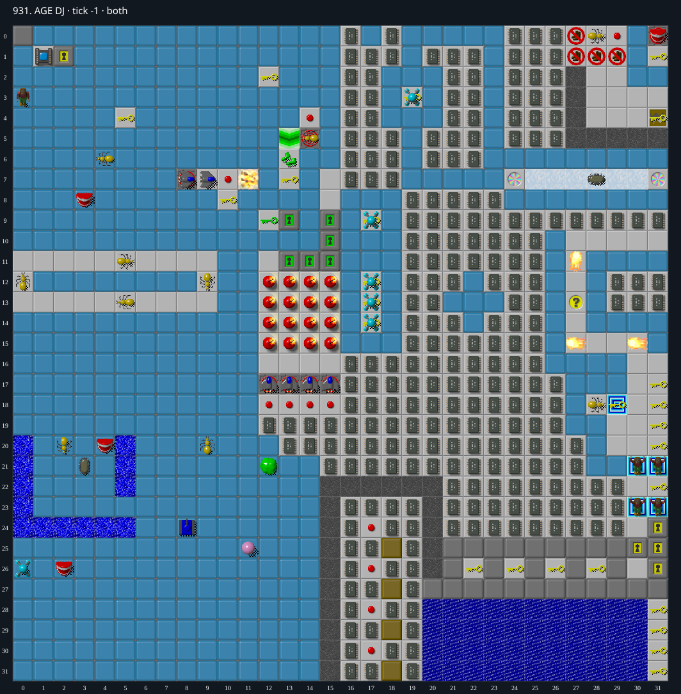

Jacques · Original Tile World MS
931. AGE DJ
Impossibility argumentTwenty-two water chips are inaccessible, and collecting the boxed Walker chip is necessarily fatal. A successful play can use at most 598 chips, but the only reachable exit requires 599.
599 chips required · 999 second time limit
Why completion is impossible
- The main Exit (0,1) can only be entered through Socket (1,1): (0,0) is Wall, (0,2) is BlueReal, and west is the board edge. The other Exit (29,18) belongs to a four-cell component enclosed by exposed BlueReal/HiddenTemp walls, with no teleport inside. Consequently every winning play must satisfy the 599-chip socket.
- There are 621 chips and no Flippers in either plane. Twenty-two Water-over-IC cells occupy x=20..30 in rows 29 and 31. Consider the first block entering any of these cells. An eastward entry at x=20 requires Chip on Cloner (18,y); a westward entry at x=30 requires Chip outside the board. Other horizontal entries already require a block on an unfilled cell in the same set. Southward entry into row 29 requires Chip on the immutable Wall in row 27; southward entry into row 31 requires Chip on unfilled row 29 Water. Northward entry into row 29 requires Chip on unfilled row 31 Water; northward entry into row 31 requires an off-board block. Thus no first fill is possible.
- The adjacent block cloners at (18,29) and (18,31) emit only one cell east, to x=19. A block has no autonomous ordinary move, and another emitted block cannot push the occupied output. There is no force floor, ice or teleport along the water boundary that could provide an unsupported additional block move. Non-block creatures do not fill Water; a Glider may instead erase a buried chip, which cannot improve collection. These 22 chips cannot contribute to a winning play.
- The active Walker at (0,26) is initially boxed by the board edge, Fake Blue Walls over Empty at (0,25) and (0,27), and Fake Blue over IC at (1,26). Only Chip can enter and remove these fake walls; blocks and other creatures cannot enter them, and cannot crush or displace the Walker. Before the first empty neighbor is exposed, the Walker therefore remains boxed.
- Entering (1,26) once removes the Fake Blue Wall but leaves the IC under Chip, still blocking the Walker. Actual IC collection, or entry onto either empty fake-wall neighbor, creates the first legal adjacent destination for the Walker, occupied by Chip. At the next positive tick divisible by four the Walker selects that sole destination, independently of its randomized turn order. Ordinary creature movement and its ending check occur before Chip input. Chip already used its ordinary move in the current four-tick group, and there is no forced floor, teleport or exit here, so Chip cannot leave first. Collection of (1,26) is physically possible but necessarily fatal before an exit can be reached. This lock permits one ordinary move per four-tick group, rather than imposing a fixed four-tick interval; mouse commands pass the same lock before parsing. Real Chip starts at (0,3), so the tick-zero creature-movement exception cannot reach the box.
- Any successful play can therefore use at most 621 - 22 - 1 = 598 chips, fewer than the 599 required by the only accessible exit route. This is an invariant argument over all play, not an inference from failed searches.
Inspect both layers
The main map shows the initial runtime state. Switch to the buried layer to inspect hidden terrain and items. Hover coordinates are also available in the downloadable SVG.


Recorded checks and attempts
- constructive prefix: 598 chips collected; exact TypeScript and original-C traces agree for all 9448 steps, final tick 9447, empty native stderr. Chip has safely left the upper cloner room and stands at (14,0). This is a nonwinning prefix.
- native fatal-pickup illustration: Chip collects the IC at (1,26) on tick 6768. Held south cannot move Chip during ticks 6769..6771. At tick 6772 the Walker moves from (0,26) to (1,26), and failure is checked before Chip input. All 6773 TypeScript and original-C trace steps match; native stderr is empty.
Scope and limitations
- The 598-chip prefix and fatal-pickup probe are nonwinning diagnostic replays. The impossibility argument is independent of unsuccessful route searches.
Evidence
- Structured report
- 931-598-prefix-9424.svg
- 931-598-prefix-9424.tws
- 931-598-prefix-9424.tws.json
- 931-598-prefix.svg
- 931-598-prefix.tws
- 931-598-prefix.tws.json
- 931-candidate-proof.json
- 931-cut.json
- 931-cut.svg
- 931-reproduce-cut.ts
- 931-reproduce-probes.ts
- 931-walker-events.json
- 931-walker-fatal-probe.svg
- 931-walker-fatal-probe.tws
- 931-walker-fatal-probe.tws.json
- legacy_c/mslogic.c:1002-1011 (board bounds)
- legacy_c/mslogic.c:1034-1037 (socket and key checks)
- legacy_c/mslogic.c:1074-1110 (non-Chip occupancy and cloner entry)
- legacy_c/mslogic.c:863-864 (Fake Blue entry law)
- legacy_c/mslogic.c:1129-1136 (ordinary actor timing and Block inactivity)
- legacy_c/mslogic.c:1216-1221 (Walker direction choices)
- legacy_c/mslogic.c:1265-1273 (choose first legal direction)
- legacy_c/mslogic.c:1355-1364 (Chip move budget)
- legacy_c/mslogic.c:1463-1480 (block cloner activation)
- legacy_c/mslogic.c:1631-1633 (Fake Blue removal)
- legacy_c/mslogic.c:1666-1671 (chip collection)
- legacy_c/mslogic.c:1684-1693 (Block Water fill)
- legacy_c/mslogic.c:1717-1720 (other actors in Water)
- legacy_c/mslogic.c:2361-2405 (creatures and ending check before Chip input)